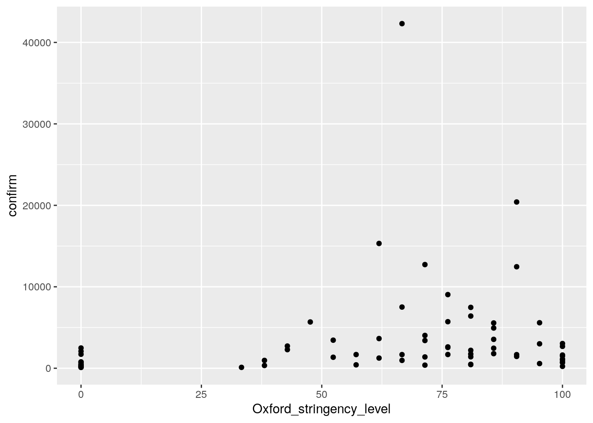
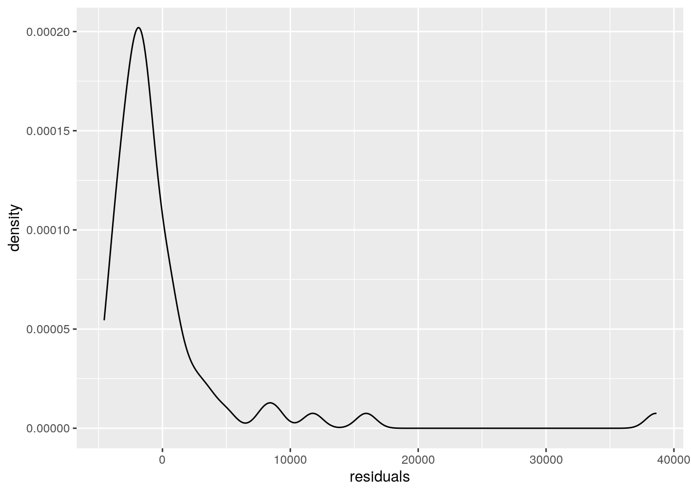
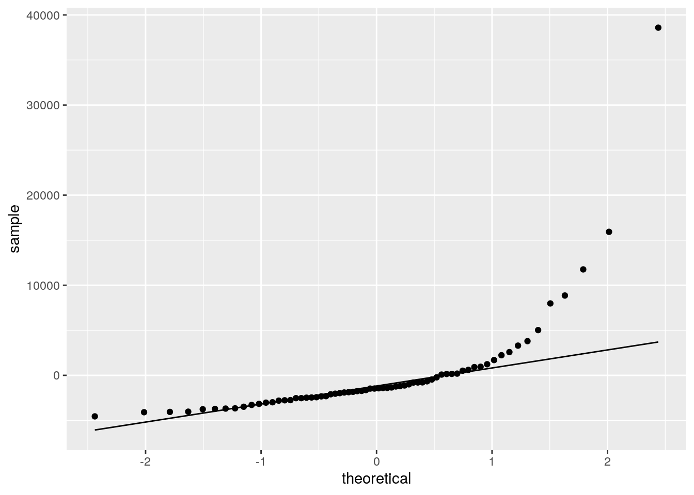
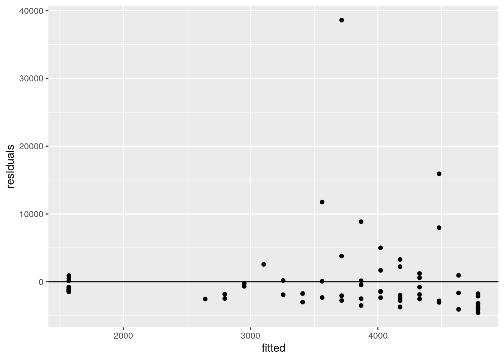
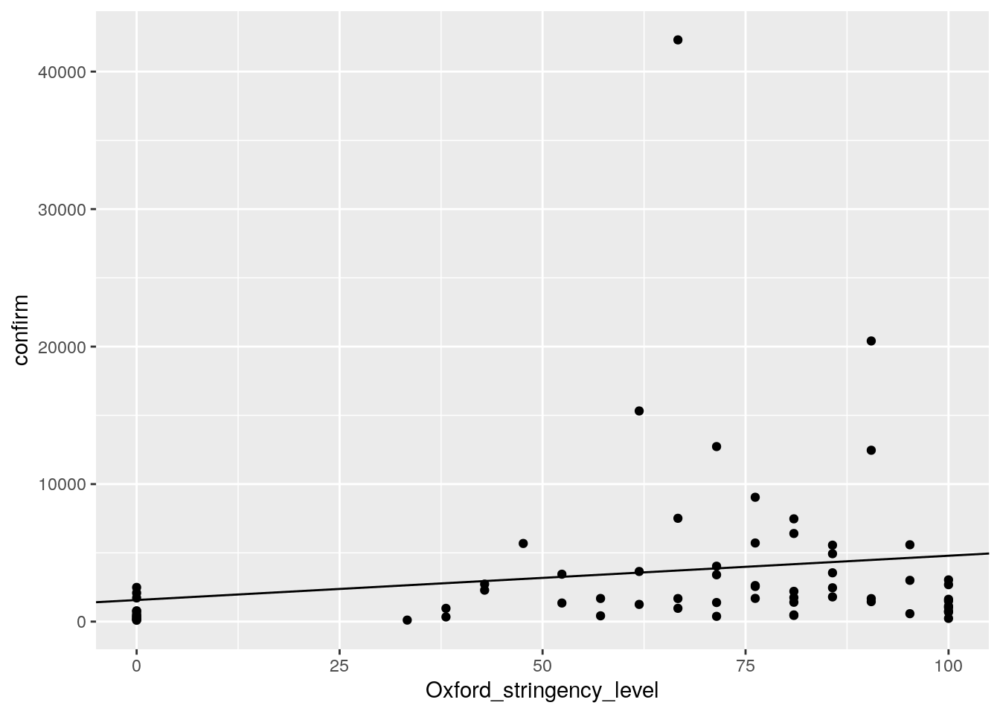
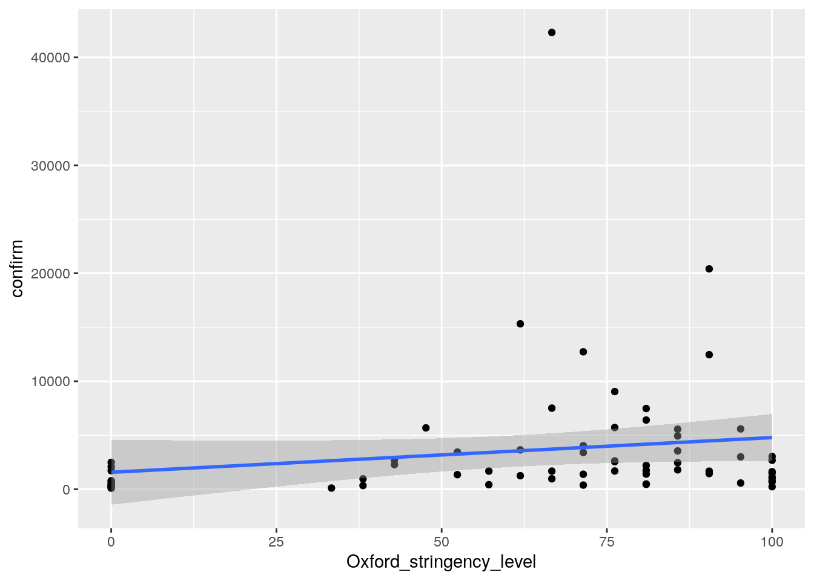
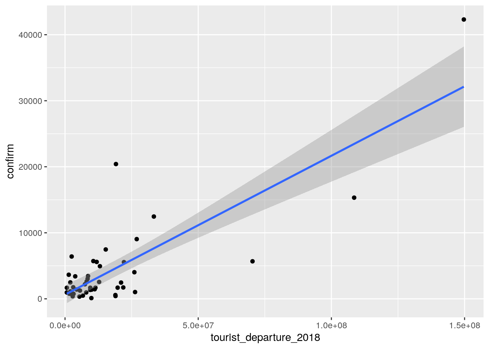

library(readr)
library(dplyr)
library(ggplot2)
cases <- read_csv("datasets/COVID19_countries_data.csv")
ggplot(cases, aes(Oxford_stringency_level, confirm))+
geom_point()
#ggsave("wrap_up_stats/cases_vs_oxford_scatter.png")
model <- lm(confirm ~ Oxford_stringency_level, cases)
#summary view
summary(model)##
## Call:
## lm(formula = confirm ~ Oxford_stringency_level, data = cases)
##
## Residuals:
## Min 1Q Median 3Q Max
## -4554 -2532 -1452 168 38591
##
## Coefficients:
## Estimate Std. Error t value Pr(>|t|)
## (Intercept) 1571.03 1503.74 1.045 0.300
## Oxford_stringency_level 32.16 21.32 1.509 0.136
##
## Residual standard error: 6012 on 66 degrees of freedom
## Multiple R-squared: 0.03334, Adjusted R-squared: 0.01869
## F-statistic: 2.276 on 1 and 66 DF, p-value: 0.1362#inspecting whether the residuals are normal distributed
#density distributions of the residuals
cases <- cases %>%
mutate(residuals = resid(model))
cases %>%
ggplot(aes(residuals)) +
geom_density()
#ggsave("wrap_up_stats/residual_density.png")#qq plot of the residuals
ggplot(cases, aes(sample = residuals)) +
geom_qq() +
geom_qq_line(distribution = qnorm)
ggsave("wrap_up_stats/qqplot_residuals.png")#looking at the residuals vs. the fitted values
cases <- cases %>%
mutate(fitted = fitted(model))
ggplot(cases, aes(fitted, residuals)) +
geom_point() +
geom_hline(yintercept = 0)
ggsave("wrap_up_stats/residual_vs_fitted.png")#Data points with fitted regression line
ggplot(cases, aes(Oxford_stringency_level, confirm))+
geom_point()+
geom_abline(intercept = 1571, slope = 32.2)
ggsave("wrap_up_stats/cases_oxford_stringency_scatter_w_regression.png")
#direct geom_smooth way
ggplot(cases, aes(Oxford_stringency_level, confirm))+
geom_point() +
geom_smooth(method = "lm")
ggsave("wrap_up_stats/cases_oxford_stringency_scatter_w_regression_v2.png")model2 <- lm(confirm ~ Oxford_stringency_level + tourist_departure_2018, cases)
summary(model2)##
## Call:
## lm(formula = confirm ~ Oxford_stringency_level + tourist_departure_2018,
## data = cases)
##
## Residuals:
## Min 1Q Median 3Q Max
## -9138.6 -1624.8 -556.4 1617.7 14881.7
##
## Coefficients:
## Estimate Std. Error t value Pr(>|t|)
## (Intercept) -1.410e+03 1.384e+03 -1.019 0.3139
## Oxford_stringency_level 3.263e+01 1.910e+01 1.708 0.0948 .
## tourist_departure_2018 2.085e-04 2.190e-05 9.521 3.74e-12 ***
## ---
## Signif. codes: 0 '***' 0.001 '**' 0.01 '*' 0.05 '.' 0.1 ' ' 1
##
## Residual standard error: 3999 on 43 degrees of freedom
## (22 observations deleted due to missingness)
## Multiple R-squared: 0.6893, Adjusted R-squared: 0.6749
## F-statistic: 47.71 on 2 and 43 DF, p-value: 1.214e-11library(broom)
tidy(model)## # A tibble: 2 x 5
## term estimate std.error statistic p.value
## <chr> <dbl> <dbl> <dbl> <dbl>
## 1 (Intercept) 1571. 1504. 1.04 0.300
## 2 Oxford_stringency_level 32.2 21.3 1.51 0.136tidy(model2)## # A tibble: 3 x 5
## term estimate std.error statistic p.value
## <chr> <dbl> <dbl> <dbl> <dbl>
## 1 (Intercept) -1410. 1384. -1.02 3.14e- 1
## 2 Oxford_stringency_level 32.6 19.1 1.71 9.48e- 2
## 3 tourist_departure_2018 0.000209 0.0000219 9.52 3.74e-12#direct geom_smooth way
ggplot(cases, aes(tourist_departure_2018, confirm))+
geom_point() +
geom_smooth(method = "lm")
ggsave("wrap_up_stats/cases_vs_tourist_departure.png")